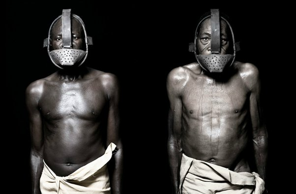
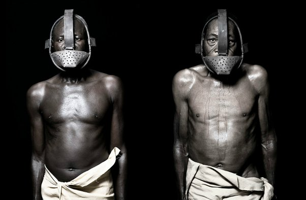
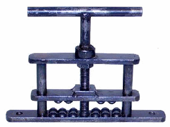
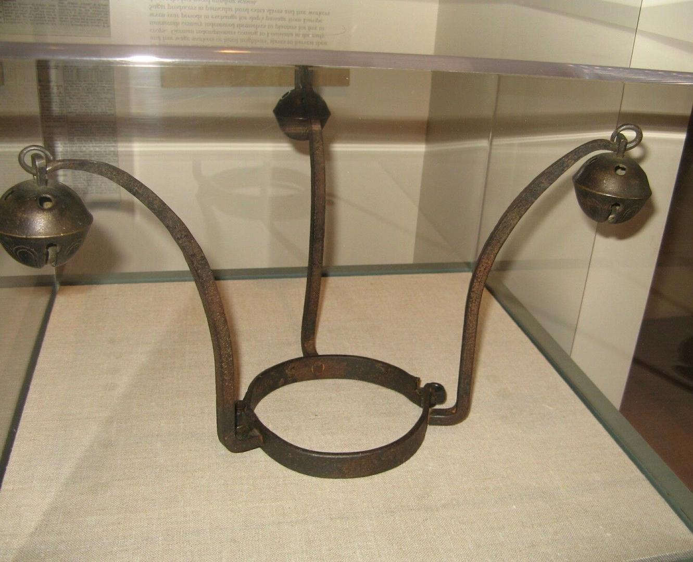
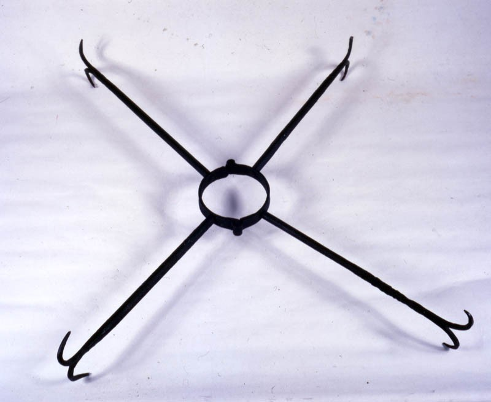

Iron Muzzle
When an enslaved Black person was accused of being disobedient or eatting without permission, this device was placed on them. This was used to restrict the victim wearing the muzzle from talking and eatting.
When an enslaved Black person was accused of being disobedient or eatting without permission, this device was placed on them. This was used to restrict the victim wearing the muzzle from talking and eatting.
This torture device was used on slave ships If a riot or uprising broke out on the ship, the leader of it would have to put his or her thumbs or fingers within the device. The device would either have smooth bumps or sharp spikes on it that would result in a hole being made in the victim's fingers. The upper part of the device would be screwed down ultimately crushing the victims fingers and crushing their bones. If the victim is left with their fingers crushed in this device for so many hours or even days, their fingers would need to be amputated afterward.
I have seen them agonizing for hours, I believe, for days together, under the torture of the thumb-screws; a dreadful engine, which, if the screw be turned by an unrelenting hand, can give intolerable anguish. John Newton
This heavy collar was worn by enslaved Black people who attempted to run away. This collar made it extremely difficult for them to sleep, ultimately sending a message to other enslaved Black people to prevent them from trying to run away.
Some may even suggest that the well-known Christmas song Jingle Bells derives from this device.
This heavy collar was worn by enslaved Black people who attempted to run away. This collar made it extremely difficult for them to sleep, ultimately sending a message to other enslaved Black people to prevent them from trying to run away.
The long rods sticking out made it hard for the victim to try to run away again because the rods would get stuck in bushes and between trees.
